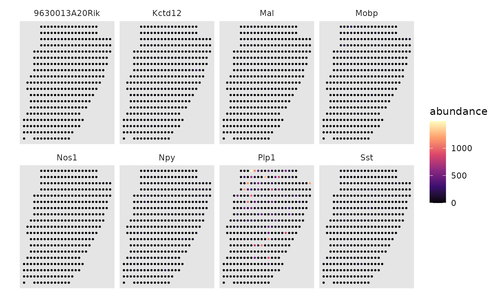

A plotting wrapper for drawing gene/abundance maps on tissue
draw_maps.RdA plotting wrapper for drawing gene/abundance maps on tissue
Usage
draw_maps(
spatial,
weights,
normalize = TRUE,
ncol = 4,
trans = "identity",
size = 0.5,
shape = 19,
flip_y = TRUE,
viridis_option = "magma",
legend_title = "abundance",
background = "gray90"
)Arguments
- spatial
Coordinates
- weights
Weights to draw (spot x feature)
- normalize
Whether weights should sum up to 1 for each spot
- ncol
Number of columns in the grid
- trans
Color transformation scale
- size
Size of points
- shape
Shape of points
- flip_y
Whether y axis should be negated
- viridis_option
Viridis color options
- legend_title
Title of color legend
- background
Background color of plot
Examples
data(dot.sample)
draw_maps(dot.sample$srt$coordinates, t(as.matrix(dot.sample$srt$counts[1:8, ])), normalize = FALSE)
#> Warning: `aes_string()` was deprecated in ggplot2 3.0.0.
#> ℹ Please use tidy evaluation idioms with `aes()`.
#> ℹ See also `vignette("ggplot2-in-packages")` for more information.
#> ℹ The deprecated feature was likely used in the DOTr package.
#> Please report the issue to the authors.
